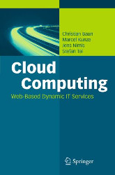

|
|
|  |
A distributed system consists of several independent computers that communicate with each other over a network. Different distributed system architectures exist in the computer science. The most popular architecture is the Client-Server model. But especially in the parallel computing field, exist among others, Cluster Computing and Cloud Computing. Cloud Computing implies scalable services and the consolidation of compute and storage resources in large-scale resource centers. This consolidation offers the opportunity to redistribute resources, which have been used so far to keep the own resources running. At the same time, the users of a Cloud infrastructure services have the freedom to use their desired operating systems, programming languages and applications. In this course, the fundamentals of Cloud Computing and related technologies are discussed. Practical exercises are an important part of this course because they are essential for thee understanding of these technologies. The course (lectures, exercises and exam) is held in English language. Parts of the slide sets are based on the book Cloud Computing: Web-Based Dynamic IT Services, which was published in 2011 by Springer. ISBN: 978-3-642-20916-1 |
|
Aktualisierte und verbesserte Vorlesungsunterlagen befinden sich auf der Seite Cloud Computing im SS2014. Updated and improved lecture materials can be found on the web page of the course Cloud Computing in SS2014. |
| Date | Time | Event | Topics |
| 10.10.2013 | 10:00-11:30 | Lecture | Slide set 1 |
| 17.10.2013 | 10:00-11:30 | Lecture | Slide set 2 |
| 24.10.2013 | 10:00-11:30 | Lecture | Slide set 3 |
| 31.10.2013 | 10:00-11:30 | Lecture | Slide set 3 |
| 07.11.2013 | 10:00-11:30 | Lecture | Slide set 4 |
| 14.11.2013 | 10:00-11:30 | Lecture | Slide set 4 + 5 |
| 21.11.2013 | 10:00-11:30 | Lecture | Slide set 5 + 6 |
| 28.11.2013 | 10:00-11:30 | Lecture | Slide set 7 |
| 05.12.2013 | 10:00-11:30 | Lecture | Slide set 8 |
| 12.12.2013 | 10:00-11:30 | Lecture | Slide set 8 + 9 |
| 19.12.2013 | 10:00-11:30 | Lecture | Slide set 10 |
| 26.12.2013 | Christmas break | ||
| 02.01.2014 | Christmas break | ||
| 09.01.2014 | 10:00-11:30 | Lecture | Slide set 11 |
| 16.01.2014 | 10:00-11:30 | Lecture | Slide set 12 |
| 23.01.2014 | 10:00-11:30 | Lecture | Slide set 13 |
| 30.01.2014 | 10:00-11:30 | Lecture | Repetition of the contents of slide set 1-12 |
| 11.02.2014 | 10:00-12:00 | Exam | The exam covers the slide sets 1-12 |
| Slide sets | Topics |
| Slide set 1 | Organisational information, Client-Server |
| Slide set 2 | Fundamentals, Laws and Limitations, Parallel computers |
| Slide set 3 | Cloud Computing, Services and Concepts, Opportunities and Risks |
| Slide set 4 | Amazon Web Services (EC2, EBS, ELB), Google Compute Engine, HP Cloud Compute |
| Slide set 5 | IBM Smart Cloud Enterprise, Amazon Web Services (S3) und Google Cloud Storage |
| Slide set 6 | Platform Services (Google App Engine) |
| Slide set 7 | Private Infrastructure Services (IaaS), Private Platform Services (PaaS) |
| Slide set 8 | Cluster Computing |
| Slide set 9 | Grid Computing |
| Slide set 10 | Peer-to-Peer |
| Slide set 11 | MapReduce/Hadoop |
| Slide set 12 | Web Services |
| Exercise sheets | Discussion | Topics | ||
| Exercise sheet 1 | Oct. 17th 2013 | Different Technologies, Client-Server Scenarios, Types of Clients | ||
| Exercise sheet 2 | Oct. 24th 2013 | Amounts of Data - storing, transmitting and transporting Data | ||
| Exercise sheet 3 | Oct. 31th 2013 | Data Rate, Laws and Limitations, Cloud Services, Service Categories and Offerings | ||
| Exercise sheet 4 | Nov. 7th 2013 | Amazon Web Services, Virtual Desktop in the Cloud, Virtual Infrastructure Design Aspects | ||
| Solution of Alexander Steinbrecher | ||||
| Solution of Muzammil Khan | ||||
| Exercise sheet 5 | Nov. 14th 2013 | Web Server with persistent Storage, High Throughput Cluster of virtual Web Servers | ||
| Solution of Alexander Steinbrecher | ||||
| Solution of Sabrina Bajorat | ||||
| Solution of Muzammil Khan | ||||
| Exercise sheet 6 | Nov. 21th 2013 | Different Storage Solutions for a virtual High Throughput Cluster, Financial Aspects | ||
| Solution of Alexander Steinbrecher | ||||
| Exercise sheet 7 | Nov. 28th 2013 | AWS Import/Export vs. Internet, Interacting with Storage Services, Different Cloud Services, Functioning of some Cloud Services | ||
| Solution of Sabrina Bajorat | ||||
| Exercise sheet 8 | Dec. 5th 2013 | Google App Engine, Sudoku Web Application for the App Engine | ||
| Exercise sheet 9 | Dec. 12th 2013 | Private Cloud Platform Services | ||
| Solution of Alexander Steinbrecher | ||||
| Exercise sheet 10 | Dec. 19th 2013 | Approximate Pi via Monte Carlo | ||
| Solution of Muzammil Khan | ||||
| Exercise sheet 11 | Jan. 9th 2014 | Cluster Computing, Grid Computing, UNICORE | ||
| Exercise sheet 12 | Jan. 16th 2014 | Peer-to-Peer, Distributed Hash Table | ||
| Exercise sheet 13 | Jan. 23th 2014 | MapReduce/Hadoop, Hadoop Cluster | ||
| Exercise sheet 14 | Jan. 30th 2014 | Web Services, RESTful Web Services |
| Result of the written examination |
| WS1112 | Exam in German language | 60 minutes | HS Mannheim | |||
| SS2011 | Exam in German language | 60 minutes | HS Mannheim | |||
| WS1011 | Exam in German language | 60 minutes | HS Mannheim | |||
| SS2010 | Exam in German language | 60 minutes | HS Mannheim |
The best way to reach me is via email: christianbaun@fb2.fh-frankfurt.de
|
Prof. Dr. Christian Baun Fachhochschule Frankfurt am Main Faculty of Computer Science and Engineering Last updated: February 17th 2014 |
|